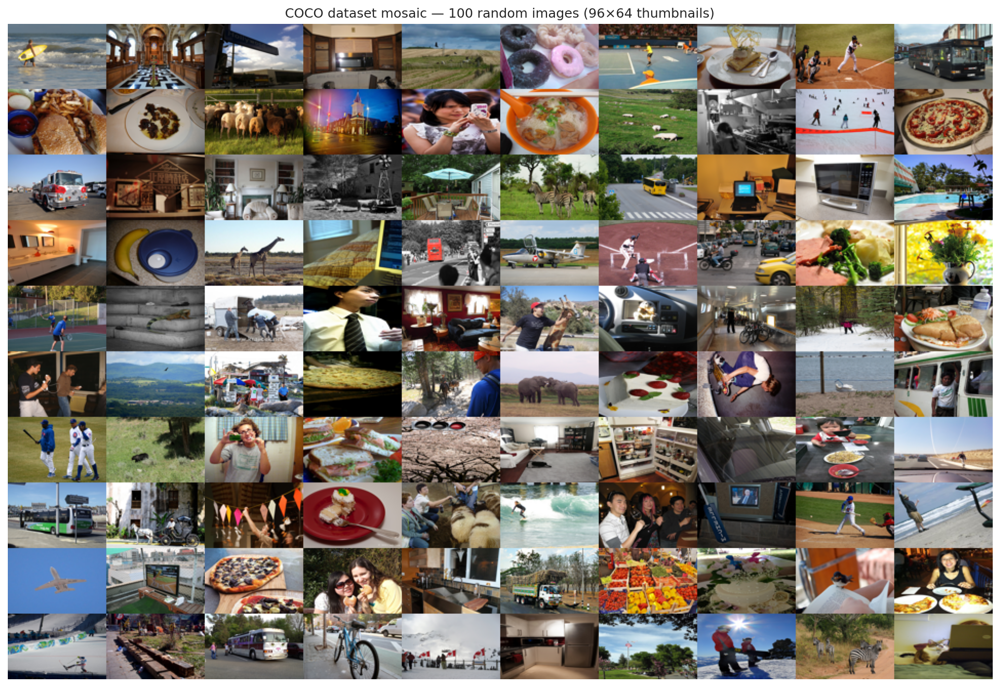
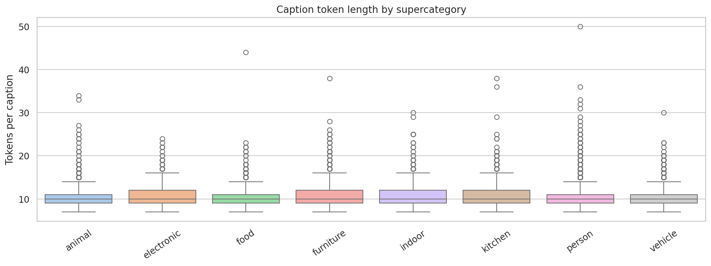
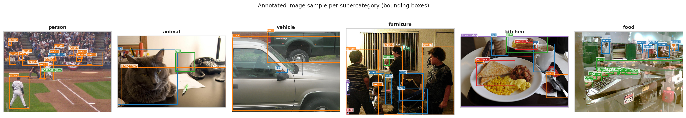

Category Gallery
Sample images and captions organized by category.
Category Image Grid

Grid of representative images from each category.
Representative Images Per Cluster

Representative images selected from each identified cluster.
Dataset Mosaic

Mosaic view showcasing diversity of images in the dataset.
Caption Length by Supercategory

Analysis of caption lengths across supercategories.
Annotated Strip Per Supercategory

Annotated image strips showing examples from each supercategory.